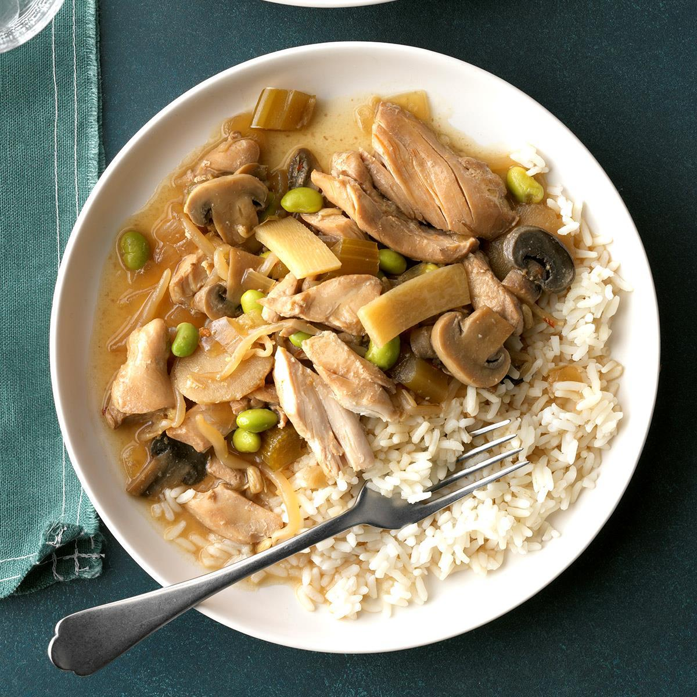

- 1 Onion (yellow or white, your choice)
- 4 Tablespoons of Butter (Absolutely optional)
- 3 Chicken Breast
- 1 Bundle of Celery
- 1 4oz Can of sliced Water Chestnuts
- 1 8oz Can of Bean Sprouts
- 1 8oz Can of Cream of Mushroom Soup
- 1 Bottle of Soy Sauce
- 1 Bottle of Teriyaki Sauce
- Rinse and boil the chicken breast until fully cooked. Shred the chicken breast afterwards.
- While waiting on the chicken to boil. Dice the onion to very fine bits and chop the celery down to small pieces.
- Heat up the skillet and melt the stick of butter if you chose to use it.
- Once the heat is ready, it's time to start cooking Chop Suey! Put all the vegetables in the skillet.
- Once the vegetables have been cooking for a minute or two, it's time to add the rest!
- Throw in the shredded chicken; the cream of mushroom soup; soy and teriyaki sauce to flavor. Then quickly mix everything!
- Cook until the veggies are completely done. Depending on choice usage of Soy and Teriyaki sauce, darkening of the chicken is a good
indicator when you're ready.
Now that's a good lookin' meal!

Congratulations on your Chop Suey! Hope you enjoy it as much as I do!
Fun tip: You can use an electric mixer to quickly shred the chicken!
Warning, use the electric mixer in quick bursts, have had incidents of the chicken turning to paste.